GOLDEN KNIGHTS
| Photo |
Name |
Number |
Position |
Shot |
Height |
Weight |
Birthday |
Hometown |
|
Pierre-Edouard Bellemare |
41 |
LW |
L |
6' 0" |
198 |
Mar 6, 1985 |
Le Blanc-Mesnil, FRA |
|
Ryan Carpenter |
40 |
C |
R |
6' 0" |
200 |
Jan 18, 1991 |
Oviedo, FL, USA |
| 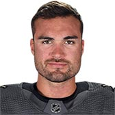 |
William Carrier |
28 |
LW |
L |
6' 2" |
212 |
Dec 20, 1994 |
LaSalle, QC, CAN |
|
Cody Eakin |
21 |
C |
L |
6' 0" |
190 |
May 24, 1991 |
Winnipeg, MB, CAN |
| 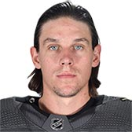 |
Erik Haula |
56 |
LW |
L |
6' 0" |
193 |
Mar 23, 1991 |
Pori, FIN |
|
William Karlsson |
71 |
C |
L |
6' 1" |
189 |
Jan 8, 1993 |
Marsta, SWE |
| 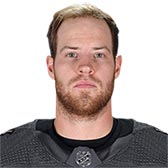 |
Oscar Lindberg |
24 |
C |
L |
6' 1" |
202 |
Oct 29, 1991 |
Skellefteå, SWE |
|
Jonathan Marchessault |
81 |
C |
R |
5' 9" |
174 |
Dec 27, 1990 |
Cap-Rouge, QC, CAN |
| 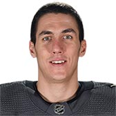 |
Tomas Nosek |
92 |
LW |
L |
6' 3" |
210 |
Sep 1, 1992 |
Pardubice, CZE |
| 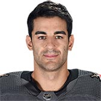 |
Max Pacioretty |
67 |
LW |
L |
6' 2" |
206 |
Nov 20, 1988 |
New Canaan, CT, USA |
|
Brandon Pirri |
73 |
C |
L |
6' 0" |
186 |
Apr 10, 1991 |
Toronto, ON, CAN |
| 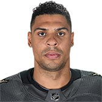 |
Ryan Reaves |
75 |
RW |
R |
6' 1" |
225 |
Jan 20, 1987 |
Winnipeg, MB, CAN |
|
Reilly Smith |
19 |
RW |
L |
6' 0" |
185 |
Apr 1, 1991 |
Mimico, ON, CAN |
|
Paul Stastny |
26 |
C |
L |
6' 0" |
193 |
Dec 27, 1985 |
Quebec City, QC, CAN |
|
Alex Tuch |
89 |
RW |
R |
6' 4" |
222 |
May 10, 1996 |
Syracuse, NY, USA |
|
Valentin Zykov |
7 |
LW |
R |
6' 0" |
220 |
May 10, 1995 |
St. Petersburg, RUS |
| Photo |
Name |
Number |
Shot |
Height |
Weight |
Birthday |
Hometown |
|
Deryk Engelland |
5 |
R |
6' 2" |
214 |
Apr 3, 1982 |
Edmonton, AB, CAN |
| 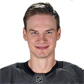 |
Nick Holden |
22 |
L |
6' 4" |
214 |
May 15, 1987 |
St. Albert, AB, CAN |
| 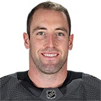 |
Brad Hunt |
77 |
L |
5' 9" |
187 |
Aug 24, 1988 |
Maple Ridge, BC, CAN |
| 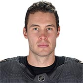 |
Brayden McNabb |
3 |
L |
6' 4" |
212 |
Jan 21, 1991 |
Davidson, SK, CAN |
|
Jon Merrill |
15 |
L |
6' 3" |
205 |
Feb 3, 1992 |
Oklahoma City, OK, USA |
|
Colin Miller |
6 |
R |
6' 1" |
196 |
Oct 29, 1992 |
Sault Ste. Marie, ON, CAN |
| 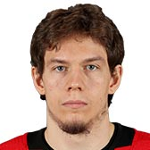 |
Nate Schmidt |
88 |
L |
6' 1" |
194 |
Jul 16, 1991 |
St. Cloud, MN, USA |
|
Shea Theodore |
27 |
L |
6' 2" |
195 |
Aug 3, 1995 |
Langley, BC, CAN |
| Photo |
Name |
Number |
Height |
Weight |
Birthday |
Hometown |
|
Marc-Andre Fleury |
29 |
6' 2" |
180 |
Nov 28, 1984 |
Sorel, QC, CAN |
|
Maxime Lagace |
33 |
6' 2" |
190 |
Jan 12, 1993 |
St. Augustin, QC, CAN |
| 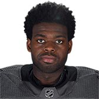 |
Malcolm Subban |
30 |
6' 2" |
200 |
Dec 21, 1993 |
Toronto, ON, CAN |